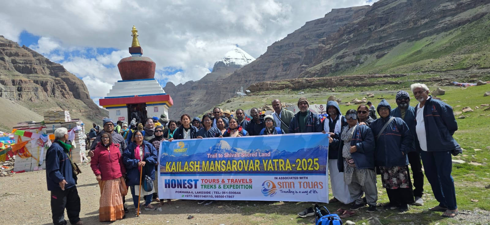
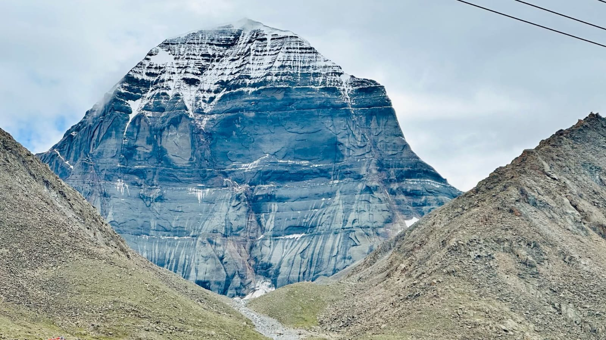

TOURS AND EXPEDITION
Experience the spiritual magnificence of Mount Kailash and the sacred Lake Mansarovar. A journey that transforms the soul and connects you with the divine.




Explore our carefully crafted travel packages designed to make your Kailash Mansarovar pilgrimage safe, comfortable, and spiritually fulfilling.
View Travel PackagesMount Kailash, standing at 6,638 meters in the remote reaches of Tibet, is not merely a mountain—it is one of the most sacred sites in the world, revered by billions across four major religions. This mystical peak, with its distinctive pyramid shape and eternally snow-capped summit, has drawn pilgrims, mystics, and spiritual seekers for thousands of years.
In Hindu tradition, Mount Kailash is the eternal abode of Lord Shiva and Goddess Parvati. Buddhists recognize it as the home of Buddha Demchok, representing supreme bliss. For Jains, it is where their first Tirthankara attained liberation.
Located at 4,590 meters, Lake Mansarovar is one of the highest freshwater lakes in the world. Created in the mind of Lord Brahma according to Hindu mythology, its turquoise waters are believed to cleanse the sins of a lifetime.
The 52-kilometer circumambulation (kora or parikrama) around Mount Kailash is the spiritual heart of the pilgrimage. Hindus and Buddhists walk clockwise, while Bon followers walk counter-clockwise.
May to September offers the most favorable weather conditions, with temperatures ranging from 10°C to 25°C during the day. The monsoon season (July-August) can bring occasional rain to the approach routes, but the Tibetan plateau remains relatively dry. Winter pilgrimages are possible but extremely challenging due to temperatures dropping below -20°C and heavy snowfall.
The journey requires good physical fitness and mental preparation. The high altitude (4,500-5,600 meters) means acclimatization is crucial. Pilgrims should begin cardiovascular training at least 2-3 months before the journey. Walking 5-8 kilometers daily with a backpack helps build stamina. Those with heart conditions, respiratory problems, or severe altitude sensitivity should consult doctors before planning the journey.
The Kailash Mansarovar Yatra requires several permits including a Chinese visa, Tibet Travel Permit, Alien's Travel Permit, and Military Permit. The process can take 4-6 weeks, and travelers must book through authorized tour operators. Individual travel is not permitted in Tibet, making group tours the only viable option for this sacred pilgrimage.
Most pilgrimages last 12-15 days, including travel time from Kathmandu. The traditional route via Kathmandu offers better acclimatization and stunning Himalayan views. Alternative routes from Lhasa take longer but provide insight into Tibetan culture and Buddhism. The actual parikrama takes 1-3 days depending on fitness levels and chosen pace.
Accommodation ranges from basic guesthouses to comfortable hotels in larger towns. During the parikrama, pilgrims stay in simple guesthouses or monasteries. Facilities are basic, especially at higher altitudes. Hot showers are rare, and electricity may be limited. Most locations offer simple vegetarian meals, with rice, dal, vegetables, and bread being staples.
Pilgrims perform rituals including holy dips in Lake Mansarovar, offering prayers at ancient monasteries, and meditation at sacred sites. Many practice the traditional prostration method around the mountain, which takes several days of intense physical devotion. The journey is as much about inner transformation as physical endurance, with many reporting profound spiritual experiences and life-changing realizations.
While photography is generally permitted, certain sacred sites and monasteries restrict it. Always ask permission before photographing locals or monks.
Respecting local customs is paramount. Dress modestly, especially at religious sites. Remove shoes before entering monasteries. Walk clockwise around religious monuments. Avoid touching sacred objects or murals.
Altitude sickness is the primary health concern. Carry necessary medications including Diamox for altitude, pain relievers, and antibiotics. Travel insurance covering high-altitude trekking and emergency evacuation is essential.
Located on the northern face of Kailash at 5,080 meters, Dirapuk Monastery offers the closest and most dramatic views of the mountain's north face. This ancient monastery, inhabited by a few Buddhist monks, serves as a vital rest stop during the parikrama. The name means "female yak horn cave," referring to the cave where the great Tibetan yogi Götsangpa meditated in the 13th century.
At 5,630 meters, Dolma La is the highest and most challenging point of the parikrama. Named after the Buddhist goddess Tara (Dolma in Tibetan), this pass is marked by countless prayer flags and represents the death of one's ego and rebirth into spiritual awareness. Pilgrims often leave personal items here, symbolizing letting go of material attachments and past karma.
This small emerald-green lake near Dolma La, at an altitude of 5,608 meters, is sacred to Hindus as the place where Goddess Parvati (Gauri) created the lake for her bath. Despite being partially frozen most of the year, devoted pilgrims take ritual dips in its icy waters, believing it purifies the soul and absolves sins. The courage required to bathe here at such altitude adds to the spiritual merit of the act.
Perched dramatically on a hillside overlooking Lake Mansarovar, Chiu Gompa is one of the most picturesque monasteries in the region. Built in the 13th century, it houses ancient murals and Buddhist scriptures. The monastery's location provides breathtaking panoramic views of the turquoise lake with Mount Kailash in the background—a sight that has inspired spiritual awakening in countless visitors.
This sacred site for Jains marks the spot where Rishabhadeva, the first Tirthankara, attained moksha (liberation). Located on the southern side of Mount Kailash, it represents the culmination of spiritual practice and the achievement of ultimate freedom from the cycle of birth and death. Jain pilgrims consider visiting this site as one of life's greatest spiritual accomplishments.
Located west of Lake Mansarovar, Rakshas Tal (also called Ravana Tal) presents a stark contrast to its sacred neighbor. This saltwater lake is associated with demon king Ravana in Hindu mythology. Despite its darker associations, the lake's deep blue waters and the desolate landscape create a hauntingly beautiful scene. The narrow strip of land separating the two lakes symbolizes the eternal balance between light and darkness, good and evil.